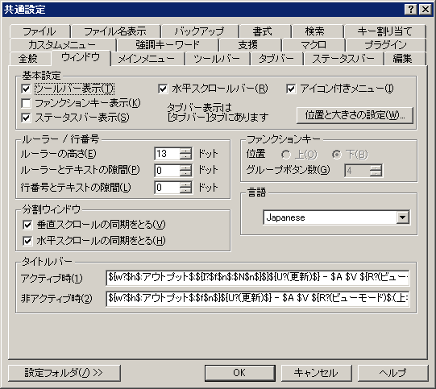

共通設定 『ウィンドウ』プロパティ
『全般』
『ウィンドウ』
『メインメニュー』
『ツールバー』
『タブバー』
『ステータスバー』
『編集』
『ファイル』
『ファイル名表示』
『バックアップ』
『書式』
『検索』
『キー割り当て』
『カスタムメニュー』
『強調キーワード』
『支援』
『マクロ』
『プラグイン』

<基本設定>
■
ツールバー表示
ツールバーを表示するか否かを設定します。
□
ファンクションキー表示
ファンクションキーを表示するか否かを設定します。
■
ステータスバー表示
ステータスバーを表示するか否かを設定します。
■
水平スクロールバー
水平スクロールバーを表示するか否かを設定します。
■
アイコン付きメニュー
メニューにアイコンを付けて表示するか否かを設定します。
■ウィンドウサイズ継承
最後にサイズ変更したウィンドウのサイズを保存しておき、後で開いたウィンドウへサイズを反映させます。
[位置と大きさの設定]ボタン
ウインドウの位置と大きさを「指定しない」、「継承する」、「直接指定」で設定します。(sakura:1.4.7.0以降)
<ルーラー>
ルーラーの高さ nnドット(13ドット)
ルーラーを表示する時、その高さをドット単位で指定します。
ルーラーとテキストの隙間 nnドット(0ドット)
テキスト表示領域の上端の隙間の高さをドット単位で指定します。
行番号とテキストの間隔 nnドット(0ドット)
行番号の右側の余白をピクセル単位で指定します。
<ファンクションキー>
位置
ファンクションキーの表示位置を選べます。
グループボタン数
1グループあたりのボタン数を設定します。各グループごとに余白が空きます。
<分割ウィンドウ>
■垂直スクロールの同期をとる
左右に分割しているときに分割ペインの一方を垂直スクロールすると他方も同時に動きます。
■水平スクロールの同期をとる
上下に分割しているときに分割ペインの一方を水平スクロールすると他方も同時に動きます。
<言語>
<タイトルバー>
アクティブ時
ウインドウがアクティブのときにタイトルバーに表示する情報を指定します。
書式は、
ExpandParameter の形式です。
デフォルト設定 (2.2.0.0時点)
${w?$h$:アウトプット$:${I?$f$n$:$N$n$}$}${U?(更新)$} - $A $V ${R?(ビューモード)$:(上書き禁止)$}${M? 【キーマクロの記録中】$} $<profile>
ウインドウがアクティブのときにタイトルバーに表示する情報を指定します。
書式は、
ExpandParameter の形式です。
デフォルト設定 (2.2.0.0時点)
${w?$h$:アウトプット$:$f$n$}${U?(更新)$} - $A $V ${R?(ビューモード)$:(上書き禁止)$}${M? 【キーマクロの記録中】$} $<profile>
[設定フォルダ]
設定フォルダボタンは、ユーザー別設定を行っている場合のみ表示されます。